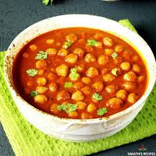

Chana masala

Description
TA delicious dish of chickpeas, onions, and tomatoes! You will love this stuff! I suggest eating this with fresh fried naan.
Ingredients
- 1 tablespoon olive oil
- 1 large onion, chopped
- 2 cloves minced garlic
- 2 teaspoons grated fresh ginger
- 1 green chile pepper, chopped
- 1 tablespoon ground cumin
- 2 teaspoons paprika
- 1 teaspoon ground coriander
- 1 teaspoon garam masala
- 1 teaspoon ground turmeric
- ½ teaspoon ground cayenne pepper
- 4 cups chopped tomatoes
- 4 cups cooked chickpeas (garbanzo beans)
-
½ cup tomato sauce
- ½ cup plain yogurt
- 1 lemon, juiced
- ½ teaspoon salt
Steps
- Step 1
Heat oil in a large saucepan over medium heat. Saute onion, garlic, ginger, and green chile pepper in hot oil until onions are translucent, about 10 minutes.
- Step 2
Season onion mixture with cumin, paprika, coriander, garam masala, turmeric, and cayenne pepper; stir. Cook onion with spices until fragrant, 1 to 2 minutes. Add tomatoes, chickpeas, and tomato sauce; stir and simmer until the tomatoes soften, about 5 minutes.
- Step 3
Stir yogurt into the mixture until the color of the mixture is even; simmer until again hot, about 5 minutes more. Remove pan from heat; stir lemon juice and salt into the mixture.
Return to top
Return to main page